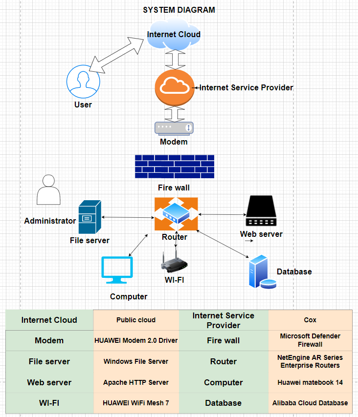

The IT project described on this page is about creating a personal information web page, and the name of the project is personal information website creation
Includes a flowchart for web page construction (the process of completing the project), a system diagram (required software and hardware).

The establishment of a personal information website can collect scattered personal information into the same website. The establishment of the website is convenient for the user's parents and friends to understand the user's information. At the same time, in the recruitment process, it is also more convenient for the company to understand the basic information of users.
The method of completing this IT project is waterfall. Complete the project step by step, such as the steps of building a website. 1.Analyze your needs and understand what your website do. 2.Collect personal information needed in the establishment data website,including photos,educational background,etc . 3.Confirm the software that will be used in the confirma construction of the website . 4.Use storvboards,hand-drawn.etc.to make a preliminary design of the website. 5.The blueprints drawn are edited in website the software to form the final website.
| Question | Answer1 | Answer2 |
|---|---|---|
| What's your name (Pingyin & English name) | Zhuang Biao (James) | Huang Buqiang (Zed) |
| Name this system? | Web page building | Creation of web pages |
| What are the system objectives? | Create a Web page | Create a personal information page |
| List 3 essential system features and components? | 1.Create a web page 2. Collect the data into the database 3.Analyze the collected data | 1.Protect corporate data 2.Collect data 3.Analyze the data |
| List 3 essential hardware from this system. | 1.WiFi:HUAWEI WiFi Mesh 7 2.Computer:Huawei matebook 14 3.Router:NetEngine AR Series Enterprise Routers | 1.Modem: HUAWEI Modem 2.0 Driver 2.Router:NetEngine AR Series Enterprise Routers 3.WiFi:HUAWEI WiFi Mesh 7 |
| List 3 essential software from this system. | 1.Internet Cloud:Public cloud 2.Database:Alibaba Cloud Database 3.Fire wall:Microsoft Defender Firewall | 1.File server:Windows File Server 2.Web server：Apache HTTP Server 3.Internet Service Provider:Cox |
| List 2 external system components. | 1.Internet Cloud:Public cloud 2.Internet Service Provider:Cox | 1.Internet Cloud:Public cloud 2.Modem:HUAWEI Modem 2.0 Driver |
| List 2 system benefits | 1.The process is clear 2.High security | 1.Know what hardware and software you need 2.Real-time updates |
| List 2 project difficulties | 1.The amount of data collected is large 2.High hardware costs | 1.High hardware costs 2.Software costs are high |